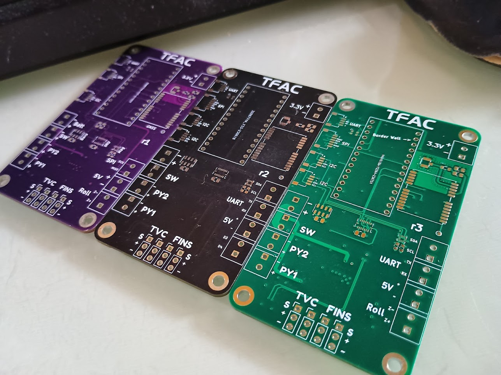
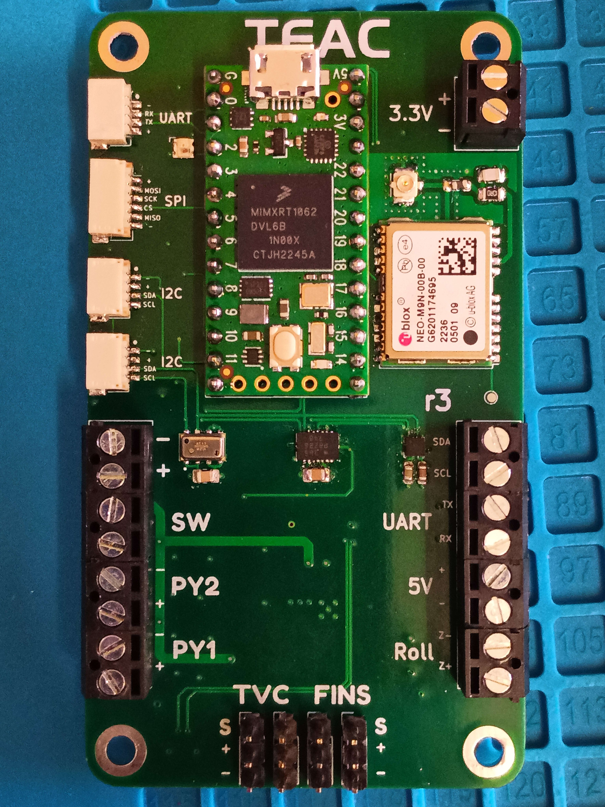
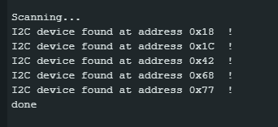
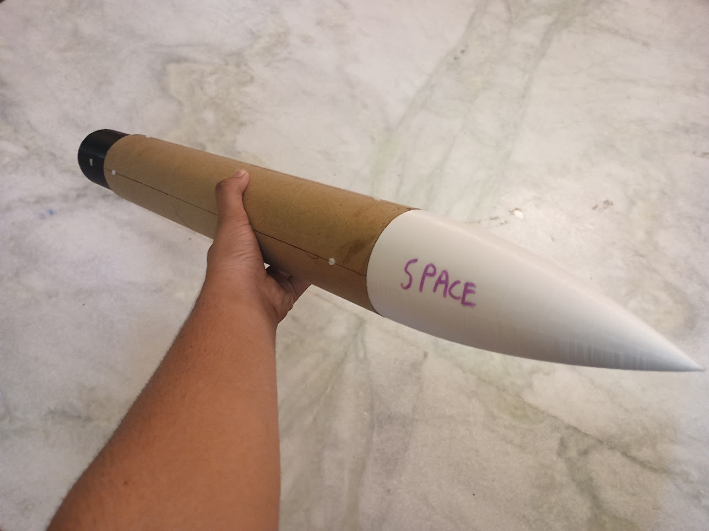
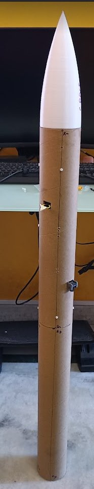
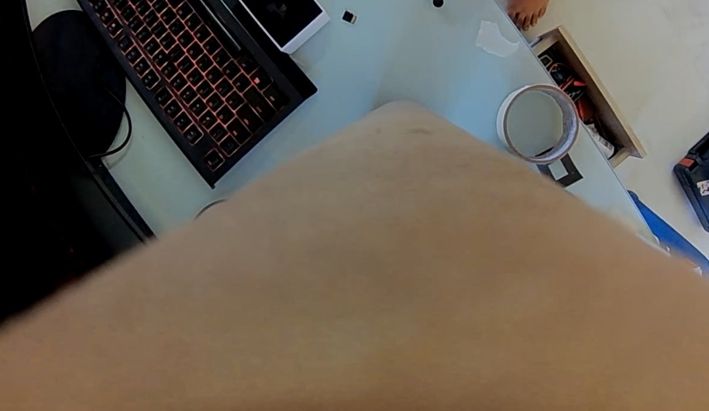
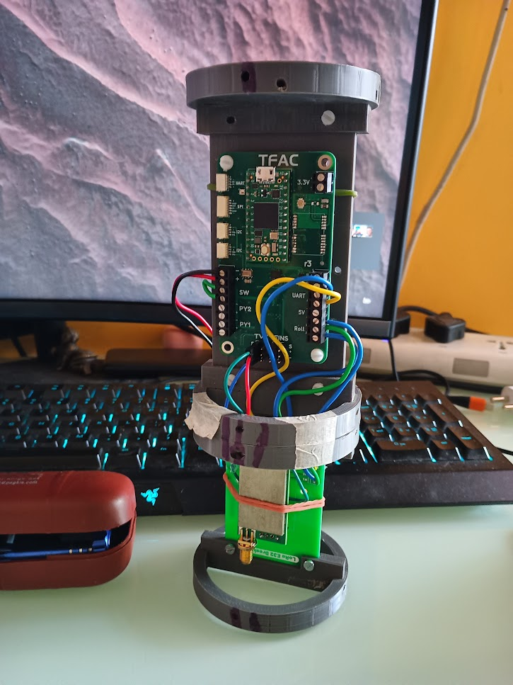
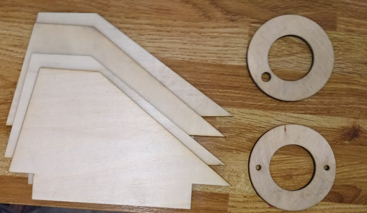
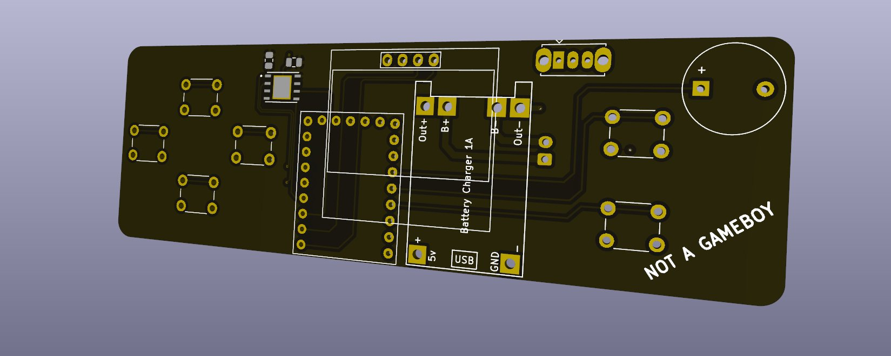

August-October 2023
Dev Log 16
Project Update - August 2023
I received the new TFAC r3 (fig 1) PCBs. And assembled them (fig 2), GPS radio and all.

The GNSS radio sort of works. It comes up on the I2C bus (fig 3), but doesn't give any data when connected to the antenna. I suspect this is an issue with the antenna rather than the board layout, but I'll have to test it out with another antenna to actually figure that out.


Project Update - September 2023
Back to Air MK1 development this month. First thing I did was design and 3D print a nosecone and coupler tube for the vehicle (fig 4).

Then I cut the aft airframe to size and drilled the holes for mounting the avionics stack and the cutouts for the runcam (fig 5, 6)


Last thing I did was integrate all components of the avionics stack together (fig 7)

Project Update - October 2023
The next thing I had to do with Air MK1 was work on the aft airframe; fins, centering rings, things like that. I designed laser cuttable files of those components and sent them to get laser cut (fig 8)

While waiting on all those parts I was inspired by a Short Circuit video on the Arduboy game console to make my own. My first PCB design (fig 9) was using an RP2040, at that time I didn't get the fact that the Arduboy was an AVR-based ecosystem. Once I figured that out I switched to using an Arduino Pro Micro as my microcontroller (fig 10).
